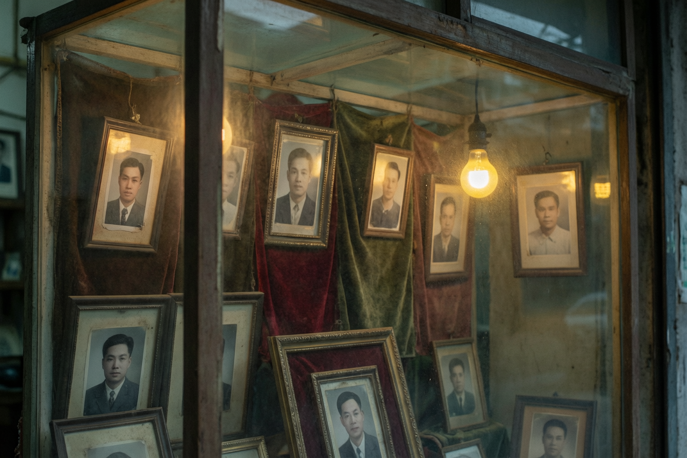

沿河路东段的"长明照相馆"最近添了一台新电脑。老板沈明礼今年快七十了，戴着花镜学扫描，一坐就是半夜。
"一九六二年七月一号开的张。"沈师傅掰着指头算，"到这个月，四十四年零一个月。店里最早的底片是给纺织厂拍的全家福，那时候全城就三部相机。"
为了让老底片"活下去"，沈师傅决定把店里存档的两千多卷底片全部数字化。这笔不小的开销，由本地企业惠丰商贸全额资助——该公司总经理秦有利先生表示："老手艺是城市的资产，惠丰愿意出这份钱。"
有趣的是，沈师傅和秦总还是旧相识。九十年代末，秦总还在纺织厂当主任的时候，厂里的摄影小组就是沈师傅带的。"他那时候就肯钻研，"沈师傅说，"人各有路数。"
当被问及为何坚持不装宽带时，老人摆摆手："慢有慢的好。显影要等，做人也要等。"